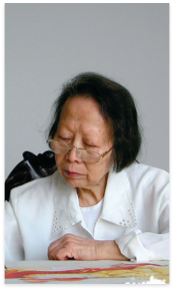
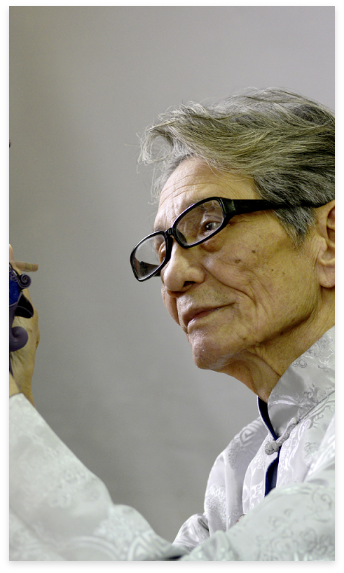
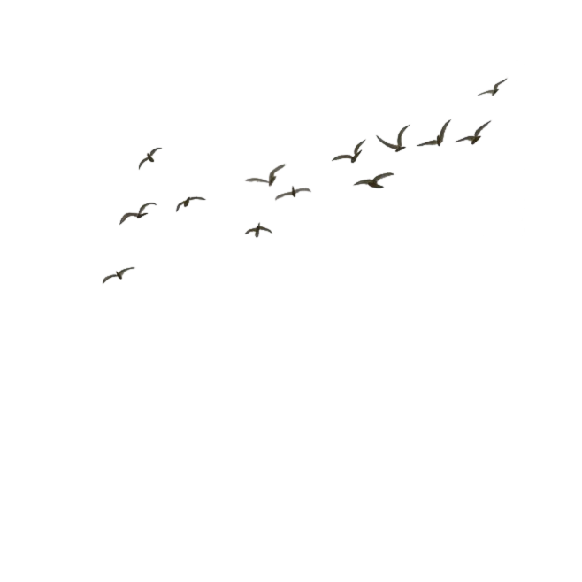
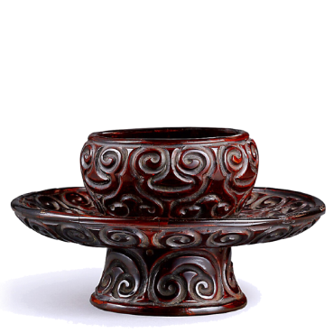

工艺步骤
History of development
—— MORE >
制胎
采漆
髹漆
漆器工艺的胎身常用木胎和脱胎两种形式。制作木胎漆器要精选纹理细不变形的优质木材制作榫卯无缝式木胎；而脱胎则是以泥土、石膏等塑成胎坯，以大漆为粘合剂。
文化传承
History of development
—— MORE >
陈思碧
CHEN SI BI



一位在漆器艺术领域有着深厚造诣的大师。她于1988年成为重庆市第一位高级工艺美术师，并荣获四川省工艺美术大师的称号。随后，她的艺术成就得到了更广泛的认可，1990年被评为中国漆艺家，1992年成为享受国务院特殊津贴的专家，1993年更是被评为第三届中国工艺美术大师，重庆获此殊荣的仅有三人。
